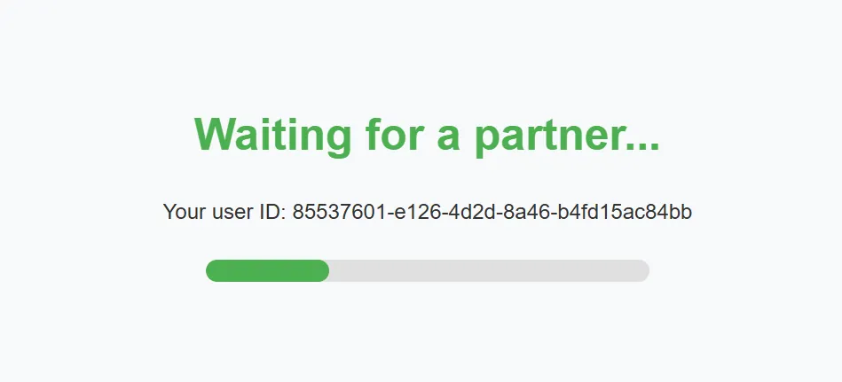
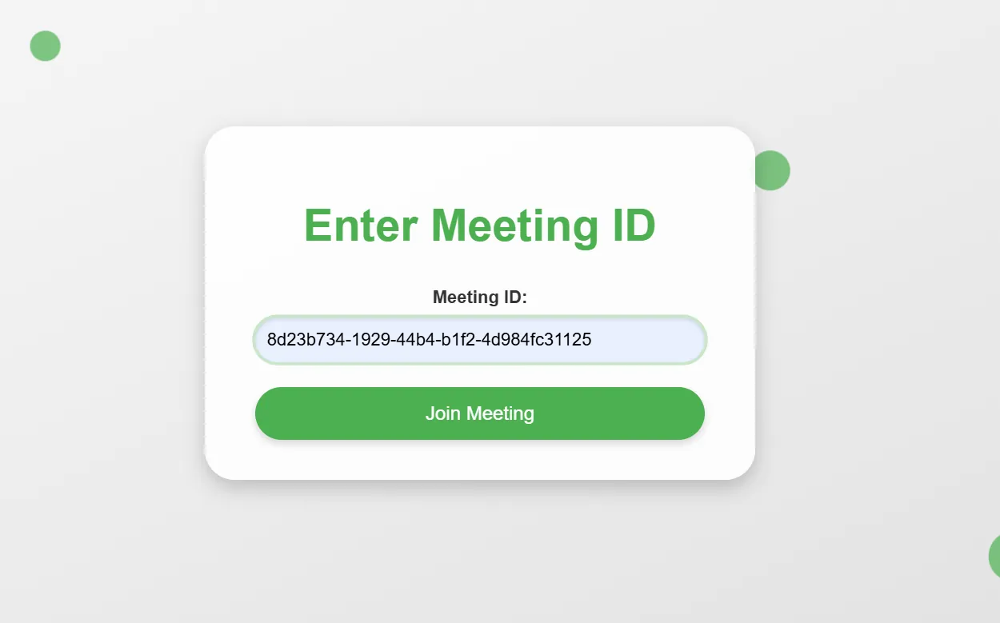
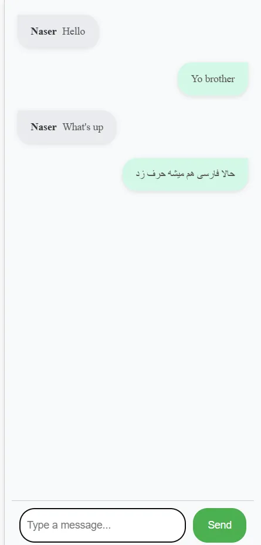

Course project
Omegle Clone
Real-time anonymous text and video chat: random partner matching, rooms joinable by ID, and peer-to-peer video over WebRTC.
- When
- Fall 2024
- Course
- Internet Engineering
- Course grade
- 19.7 / 20
- Team
- Team of two

Overview
A full-stack clone of Omegle-style random chat, built as the Internet Engineering course project.
What I did
- Node.js and Express backend following MVC (models, controllers, routes, views), with PostgreSQL through the Sequelize ORM for users, meetings, participants and messages.
- Socket.IO for signalling and text chat; WebRTC for peer-to-peer video between matched users.
- Random partner matching, meeting rooms joinable by ID, an option to hide the camera, and a layout that works on phones.
- Served over HTTPS with locally trusted certificates, since browsers only allow camera access on secure origins, and packaged with Docker Compose.
Gallery


